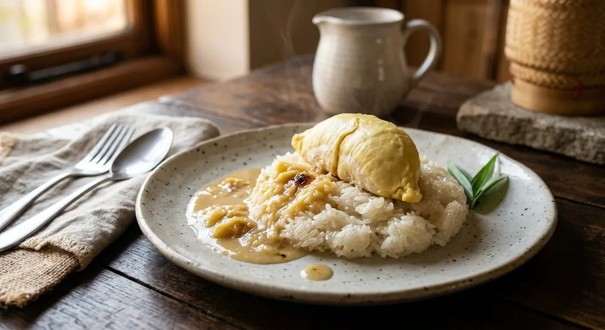

Sticky rice steamed, then munned with warm salted coconut cream and pandan — topped with durian and a palm-sugar coconut sauce. Mango sticky rice's heavier, louder cousin.

ข้าวเหนียวทุเรียน is what the mango sticky rice stall sells for the three months of durian season — TrueID's MEEKAO dates it from late March, running two to three months. The dish is two things layered: khao niew mun, sticky rice munned with sweet-salty coconut cream, and durian — Thailand's king of fruit — either stewed gently into a coconut-palm-sugar sauce or laid on top in fat fresh pieces.
The detail every Thai source insists on before anything else is the rice. Aroifin's chef names ข้าวเหนียวเขี้ยวงู — kiew ngu, the slender "snake-fang" grain — the only variety that stays soft overnight instead of hardening in the fridge, and adds an old-timer's step western recipes never mention: scrub the raw grains with สารส้ม, alum, to make them glossy. Kapook and MEEKAO use the same alum but dissolve it into the soaking water instead of scrubbing — three hours' soak at least, then steam.
The other half of the craft is the mun: the coconut cream, sugar, salt and pandan are warmed until just hot — never boiled, or the cream แตกมัน, splits into oil and water — then folded into the hot rice and left under a lid for anywhere from ten minutes (MEEKAO, stirred and repeated) to a full hour (Aroifin), until the grains drink the cream. And the salt is not a pinch: Aroifin uses four teaspoons across the recipe, because salt is what cuts the durian's fat. Wongnai's home cook skips the sauce entirely and stews a whole durian into sweetened coconut milk over black sticky rice, and TrueID's ครัวพิศพิไล turns the durian husk itself into the bowl — mun rice stuffed inside, steamed mung beans on top.
| Thai | English | Amount |
|---|---|---|
| ข้าวเหนียวเขี้ยวงู | Kiew ngu sticky rice | 500 g |
| สารส้มก้อน | Alum (for scrubbing the rice) | 1 lump |
| หัวกะทิ | Coconut cream | 1,000 ml |
| น้ำตาลทราย | Sugar | 120 g |
| น้ำตาลปี๊บ | Palm sugar | 120 g |
| เกลือ | Salt | 4 tsp |
| ใบเตย | Pandan leaves | 6 leaves |
| ทุเรียน | Durian | 1 fruit, the best segments |
The whole durian in the sauce (Kapook): for 500 g white sticky rice — 350 ml fresh-pressed coconut milk, 200 g sugar and 2 tsp salt in the mun; the sauce is 2 cups coconut milk, 100 g palm sugar and ½ tsp salt, with 500 g of torn ripe durian added at the first boil. The caramel-first sauce (TrueID, MEEKAO): mun of 500 g coconut cream, 220 g sugar, 1 tsp salt and 6–7 pandan leaves; the sauce melts 120 g coconut sugar until it darkens and smells toasted before the 500 g coconut cream and 4–5 durian segments go in. The black-rice version (Wongnai, Kao Infinity): 500 g black sticky rice soaked overnight, steamed, served under 1 kg coconut milk boiled with 700 g sugar, 2 tsp salt and a whole durian until thickened. The stuffed version (TrueID, ครัวพิศพิไล): 250 g rice mun-ed with 250 ml coconut milk, 150 g sugar and 1 tsp salt, plus 100 g steamed split mung beans, packed into halved durians.
Where the durian goes. Kapook and MEEKAO cook all of the durian into the coconut sauce. Aroifin mashes only part of it into the sauce and serves the best pieces fresh on top. Wongnai stews a whole durian into sweetened coconut milk over black rice. ครัวพิศพิไล skips the sauce and serves fresh durian as the bowl itself.
The rice. Four sources use white kiew ngu sticky rice. Wongnai's home cook uses ข้าวเหนียวดำ, black sticky rice — a different dish in colour and chew.
The alum. Aroifin scrubs the dry grains with a lump of alum for gloss; Kapook and MEEKAO stir pounded alum into the soaking water and rinse. ครัวพิศพิไล and Wongnai skip it altogether — ครัวพิศพิไล steeps its rice in boiled water for 10 minutes instead.
The sugar. Aroifin splits the sweetness: granulated sugar in the mun, palm sugar in the sauce. Kapook's mun is granulated only, palm sugar only in the sauce. MEEKAO uses coconut sugar in the sauce and caramelises it until dark and fragrant before the cream goes in — the richest of the three.
The salt. Aroifin's 4 tsp across the recipe is by far the heaviest hand; Kapook totals 2½ tsp, MEEKAO 2 tsp. All agree salt is structural, not seasoning.
The mung beans. Only ครัวพิศพิไล adds steamed split mung beans — the classic khao niew mun topping that most khao niew durian recipes leave out.
This recipe is translated from the following Thai-language sources. Where they disagree, we've said so.
1. Aroifin — "วิธีทำ ข้าวเหนียวทุเรียน สูตรข้าวนุ่มเรียงเม็ด หอมมันกะทิ" by เชฟเจิน (the recipe used here) — aroifin.com
2. Kapook — "ข้าวเหนียวทุเรียนน้ำกะทิ หวานอร่อย กลิ่นหอมชวนชิม" (the all-in-the-sauce version) — cooking.kapook.com
3. TrueID Food — "เมนูหน้าร้อน! แจกสูตร ข้าวเหนียวทุเรียนน้ำกะทิ" by MEEKAO (the caramel-first sauce) — food.trueid.net
4. TrueID Food — "ตามรอยเมนูดัง! สูตรทำ ทุเรียนไส้ข้าวเหนียว" by ครัวพิศพิไล (the stuffed-durian version) — food.trueid.net
5. Wongnai — "สูตร ข้าวเหนียวทุเรียน" by Kao Infinity (the black sticky rice version) — wongnai.com